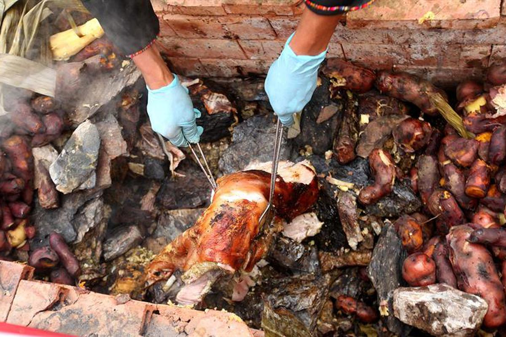
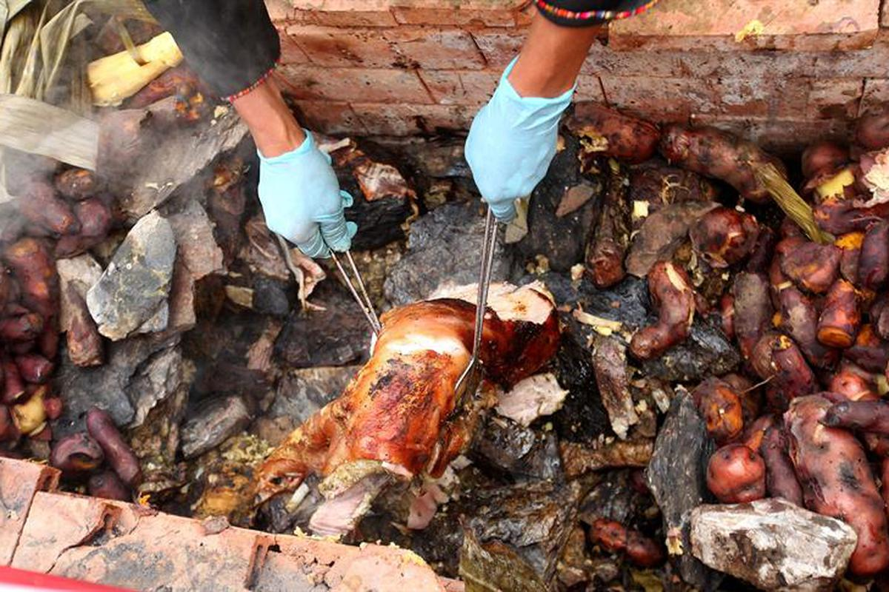

Colocar el pollo, el cordero y la panceta de cerdo en un bowl. Agregar en la licuadora la chicha de jora, la cerveza negra, el vinagre tinto, el ají panca, el ají amarillo, el ajo, el chincho, el huacatay, la hierbabuena, el culantro, el romero, la muña, la sal, la pimienta y el comino al gusto. Licuar. Verter la mezcla licuada en el bowl. Remover. Dejar macerando por 24 horas en la refrigeradora. Añadir en una olla las piezas maceradas, las papas, el camote, el choclo, las habas, la mezcla del macerado, el mix de hierbas. Tapar. Dejar cocinar por 30 minutos. Destapar y probar hasta que las carnes estén bien cocidas.
 
